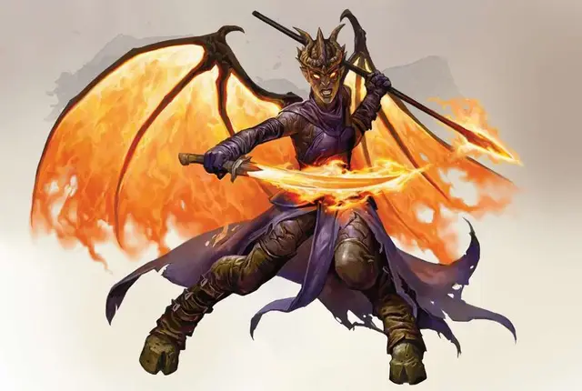

Зариэль
Zariel
Большое Исчадие (Дьявол), законно-злое, именной НИП

Класс Доспеха 21 (природный доспех)
Хиты 420 (29к10 + 261)
Скорость 50 футов, летая 150 футов
| мод | спас | ||
|---|---|---|---|
| СИЛ | 27 | +8 | +8 |
| ЛОВ | 24 | +7 | +7 |
| ТЕЛ | 28 | +9 | +9 |
| мод | спас | ||
|---|---|---|---|
| ИНТ | 26 | +8 | +16 |
| МДР | 27 | +8 | +16 |
| ХАР | 30 | +10 | +18 |
Навыки Восприятие +16, Запугивание +18
Сопротивление урону излучение, огонь, холод; дробящий, колющий, рубящий от немагических атак, кроме нанесённых посеребрённым оружием
Иммунитет к урону некротическая энергия, яд
Иммунитет к состояниям отравление, очарование, испуг, истощение
Чувства тёмное зрение 120 футов, пассивное Восприятие 26
Языки Все, Телепатия 120 фт.
Опасность 26 (90000 опыта)
Бонус мастерства +8
Особенности
Дьявольское зрение. Магическая тьма не мешает её тёмному зрению.
Легендарное сопротивление (3/день). Если Зариэль проваливает испытание, она может вместо этого сделать испытание успешным.
Сопротивление магии. Зариэль совершает с преимуществом спасброски от заклинаний и прочих магических эффектов.
Регенерация. Зариэль восстанавливает 20 хитов в начале своего хода. Если она получает урон излучением, эта способность не работает в начале её следующего хода. Зариэль умирает только в том случае, если в начале её хода у неё 0 хитов, и она не может регенерировать.
Культ Зариэль. Зариэль дарует своим прислужникам особые способности. Культисты Зариэли могут получить особенность «Яростный всплеск». Лидеры культа также могут получить особенность «Инфернальная тактика».
Яростный всплеск (перезаряжается после короткого или продолжительного отдыха). Когда это существо попадает атакой, которая не является критическим попаданием, оно может превратить её в критическое попадание.
Инфернальная тактика. Сразу после броска инициативы оно может выбрать себя и до трёх союзников, которые не являются недееспособными. Оно может обменять результаты бросков инициативы между этими выбранными существами.
Действия
Мультиатака. Зариэль совершает три атаки Цепом или Длинным мечом. Она может заменить одну из атак на Ужасное прикосновение, если это возможно.
Цеп. . Рукопашная атака оружием: +16 к попаданию, досягаемость 10 футов, одна цель. Попадание: 17 (2к8 + 8) урона силовым полем плюс 36 (8к8) урона огнём.
Длинный меч. Рукопашная атака оружием: +16 к попаданию, досягаемость 10 футов, одна цель. Попадание: 17 (2к8 + 8) урона излучением или 19 (2к10 + 8) урона излучением при ударе двумя руками плюс 36 (8к8) урона огнём.
Ужасное прикосновение (перезарядка 5–6). Зариэль касается одного существа, находящегося в пределах 10 футов от неё. Цель должна преуспеть в спасброске Телосложения Сл 26, иначе получит 44 (8к10) урона некротической энергией и становится отравленной на 1 минуту. При отравлении таким образом цель также ослеплена и оглушена. Цель может повторять спасбросок в конце каждого своего хода, заканчивая на себе эффект при успехе.
Использование заклинаний. Зариэль накладывает одно из следующих заклинаний, используя Харизму в качестве базовой характеристики и без использования материальных компонентов (Сл спасброска от заклинаний 26):
• Неограниченно: смена обличья [alter self] (может стать Средним при изменении внешности), обнаружение зла и добра [detect evil and good], огненный шар [fireball], невидимость [invisibility] (только на себя), образ [major image], огненная стена [wall of fire];
• 3/день каждое: стена клинков [blade barrier], рассеивание зла и добра [dispel evil and good], перст смерти [finger of death].
Телепортация. Зариэль магическим образом телепортируется вместе со всем несомым и носимым снаряжением в видимое ей свободное пространство в пределах 120 футов.
Легендарные действия
Зариэль может совершить 3 легендарных действия, выбирая из представленных ниже вариантов. За один раз можно использовать только одно легендарное действие, и только в конце хода другого существа. Зариэль восстанавливает использованные легендарные действия в начале своего хода.
Телепортация. Зариэль использует действие Телепортация.
Жертвенный взор (стоит 2 действия). Зариэль обращает магический взгляд на существо, которое может видеть в пределах 120 футов и приказывает ему самовоспламениться. Цель должна совершить спасбросок Мудрости Сл 26, иначе получит 22 (4к10) урона огнём.
Логово
Логово Зариэли находится в базальтовой цитадели, что вознесена в Авернус. Почти в миле от цитадели, существо может услышать крики и стоны сожжённых жертв, прикованных к стенам цитадели, погибших из-за того, что разочаровали ахридьяволицу. Цитадель, занимающая 5 квадратных миль, окружена стенами с высокими башнями. Дьяволы всех мастей кишат в этой цитадели, защищая крепость от посторонних.
Действия логова
При значении инициативы «20» (проигрыш при ничье), Зариэль совершает действие логова, чтобы вызвать один из следующих эффектов; Зариэль не может использовать один и тот же эффект два раунда подряд:
• Огненный шар. Зариэль накладывает огненный шар [fireball].
• Инфернальная иллюзия. Зариэль накладывает заклинание образ [major image] четыре раза, нацеливаясь им на разные области. Зариэль предпочитает создавать образы сожжённых заживо близких людей злоумышленников. Зариэли не нужно концентрироваться на заклинаниях, которые заканчиваются при значении инициативы «20» следующего раунда. Каждое существо, видящее эти иллюзии, должно совершить спасбросок Мудрости Сл 26, иначе будет напугано иллюзией на 1 минуту. Испуганное существо может повторить спасбросок в конце каждого своего хода, заканчивая на себе эффект при успехе.
Местные эффекты
Местность, в которой есть логово Зариэли, искажается её магией, которая создаёт один или несколько следующих эффектов:
• Адский пейзаж. Территория в пределах 9 миль от логова наполнена жуткими криками и зловонием сгоревшего мяса.
• Погребальные костры. Каждые 60 футов в пределах 1 мили от логова, из земли вспыхивает большое пламя, высотой в 10 футов. Любое существо или объект, прикоснувшийся к пламени, получает 7 (2к6) урона огнём, этот урон наносится не больше одного раза в раунд.
• Дым. Территория в пределах 2 миль, но не ближе 500 футов от логова, наполнена дымом, из-за чего местность становится сильно заслонённой. Дым не может быть рассеян.
Если Зариэль умирает, эти эффекты исчезают через 1к10 дней.
Описание
«Тот, кто теряет благодать, еще может подняться, чтобы вернуть её. Если бы Зариэль вернулась к своему небесному "я", какими славными были бы сказания!»
— Морденкайнен
Некогда Зариэль была могучим ангелом, и ей поручили следить за ходом Войны Крови. В итоге Зариэль поддалась нечистому влиянию Девяти Преисподних и пала. Асмодей восхитился страстью Зариэли к военному делу и предложил ей править Авернусом. Она приняла предложение и он превратил её в архидьяволицу.
«Возвышение» Зариэли произошло за счёт исчадия ада Бела, её предшественника. Зариэль и Бел ненавидят друг друга. Чтобы занять Бела делом и убрать с глаз долой, Зариэль поручает ему изготавливать оружие, броню и жуткие машины для убийства демонов.
Для пополнения легионов Зариэли нужны души мёртвых, из которых можно создать лемуров, а потом повысить до более высоких форм дьяволов. Она очень заинтересована в сборе душ величайших воинов Материального плана. С ней сложно договориться, и очень мало шансов отвертеться от её сделки. Тем не менее, она действительно ожидает лучшего от своих прислуг, и поэтому она позволяет своим смертным последователям прожить свою жизнь, при условии, что они продолжают оттачивать свои таланты, чтобы повысить свою ценность. Поэтому слуги Зариэли невероятно эффективны, дисциплинированны и весьма опасны.